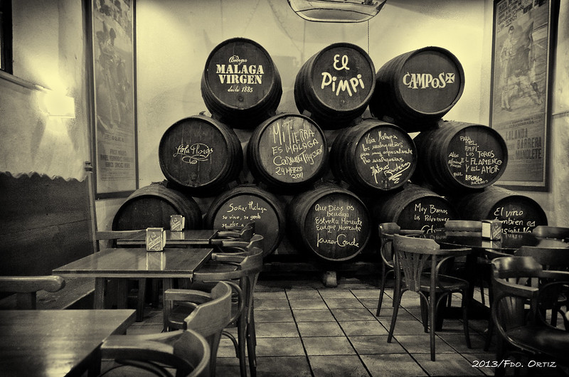

El Pimpi
- One of Málaga’s most iconic restaurants, El Pimpi is famous for its Andalusian cuisine, lively atmosphere, and walls decorated with photos of celebrities who have visited. It’s the perfect place to experience local traditions.
- Founded in 1971, located in a historic 18th‑century mansion in the city center.
- Known for its extensive wine cellar and traditional Andalusian dishes.
- A cultural landmark decorated with photos of celebrities and local artists.
- El Pimpi features charming outdoor terraces with views of the Alcazaba and Roman Theatre, making it a perfect spot to enjoy Málaga’s atmosphere.
- C. Granada, 62, Distrito Centro, 29015 Málaga, España
- https://www.elpimpi.com/reservas/

Casa Lola
- Time: March. The exact days vary each year.
- This festival is one of the most important film festivals in Spain. It focuses on promoting Spanish cinema and showcases a variety of films, including feature films, documentaries, and short films. It started in 1998 and it aims to promote Spanish and Latin American productions.
La Inma
- Time: End of March or beginning of April, depending on the date of Easter.
- Holy Week is one of the most famous and significant religious events not only in Malaga, but in all Spain. It features elaborate processions with religious floats, traditional music, and penitents dressed in distinctive costumes. This event attracts thousands of visitors each year.
Metro
- Time: August, usually the second week of the month.
- This is one of the most important and lively festivals in Malaga. In the morning, there are traditional activities such as horse parades, flamenco performances, and local food stalls. At night, the youth gather in the fair to dance at clubs and ride in different attractions.
Airport
- Time: In December.
- The Medieval Market in Malaga is a popular event that recreates the atmosphere of the Middle Ages. Visitors can enjoy traditional crafts, food, music, and performances. The market features vendors dressed in period costumes, selling handmade goods and local delicacies from all places of Malaga's province.
Gran Hotel Miramar
- Time: In December.
- The Medieval Market in Malaga is a popular event that recreates the atmosphere of the Middle Ages. Visitors can enjoy traditional crafts, food, music, and performances. The market features vendors dressed in period costumes, selling handmade goods and local delicacies from all places of Malaga's province.